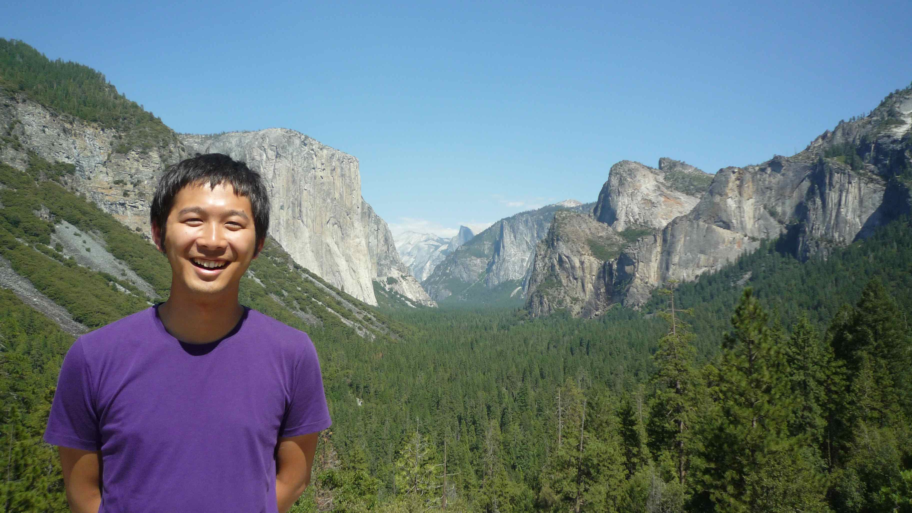

Name: Yoshiyuki Inoue
Email: yoshiyuki.inoue_at_riken.jp
Phone: +81-48-467-9608
Date of Birth: February 1st, 1985
Nationality: Japan
Address: iTHEMS, RIKEN, 2-1 Hirosawa, Wako, Saitama 351-0198, JAPAN
Projects: CTA (2010-), Fermi (2012-), Hitomi (2012-), NuSTAR (2012-2014), MAGIC (2019-), GRAMS (2019-)
Research Interests
High Energy Astrophysics, Supermassive Black Holes, Active Galactic Nuclei, Relativistic Jets, Cosmic Background Radiation
Education
- Ph.D. (Science), Department of Astronomy, Kyoto University, March, 2012
- M.S. (Scinence), Department of Astronomy, Kyoto University, March, 2009
- B.S. (Science), Department of Astronomy, Kyoto University, March, 2007
- Takatsuki High School, March, 2003
Employment
- Senior Reseach Scientist, RIKEN (11/2017-)
- JAXA International Top Young Fellow, JAXA/ISAS (02/2014-10/2017)
- JSPS Research Fellow in Abroad, KIPAC/SLAC/Stanford (04/2012 - 01/2014)
- JSPS Research Fellow, Kyoto University (04/2009-03/2012)
Joint Appointment
- Visiting Reseach Scientist, Kavli IPMU (07/2018-)
Awards
Grants, Fellowships
- JSPS Grant-in-Aid for Early-Career Scientists (PI), ¥3,770,000, FY2019-2021
“Measuring Magnetic Fields in the Vicinity of Supermassive Blackholes through Radio and X-ray Observations”, 19K14772 - JSPS Grant-in-Aid for Scientific Research on Innovative Areas (Research in a proposed research area) (Co-I), ¥174,330,000, 2018/06/29 – 2023/03/31
“Toward new frontiers : Encounter and synergy of state-of-the-art astronomical detectors and exotic quantum beams”, 18H05458 - the Leading Initiative for Excellent Young Researchers (LEADER) program by MEXT (卓越研究員), ¥6,000,000 (for 2 yrs) + ¥3,000,000 (for 5 yrs), FY2017-2021
- JSPS Grant-in-Aid for Challenging Research Exploratory (PI), ¥3,510,000, 2016/04/01 – 2019/03/31
“Probing the origin of the cosmic infrared background radiation using gamma-ray objects”, 16K13813 - Daiwa Foundatoin Grants for UK-Japan Collaboration (Co-I), £3k, FY2016-2017
“Prospect for Future CTA Survey” - JAXA International Top Young Fellowship (PI), ¥2500k/year, 2014/02/01-2019/01/31
“Deciphering the Nature of Supermassive Black Holes Linking Theory and Observations” - NASA Fermi Grant GI Cycle-6 (Co-I), $80,000, FY2013-2014
“Joint Analysis of Fermi/LAT And Nustar Observations of Blazars” - Hayakawa Sachio Foundation Grant, ¥266,000, FY2013
- JSPS Research Fellowship for Research Abroad, ¥10,512,000, FY2012-2013
「宇宙X線ガンマ線背景放射と活動銀河核の宇宙論的進化」 - JSPS Research Fellowship DC1, ¥2,800,000, FY2009-2011
「GLAST時代の宇宙X線ガンマ線背景放射と活動銀河中心核」